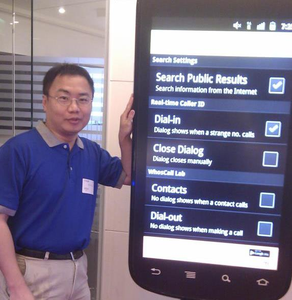

|  | Chih-Yu Lin |
|
| Education | Experiences | Biography |
| Publication | Academic Activities | Invited Talks |
| Awards | Certificates | Projects |
Chih-Yu Lin received his B.S. and M.S. degrees in Computer Science from the National Central University in 1998 and 2000, respectively. He obtained his Ph.D. in Computer Science from the National Chiao-Tung University in September 2007. His research interests include mobile digital content, wireless networks, distributed computing, and artificial intelligence.